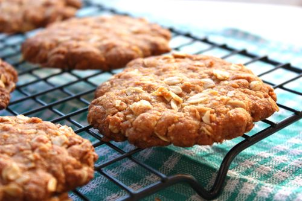
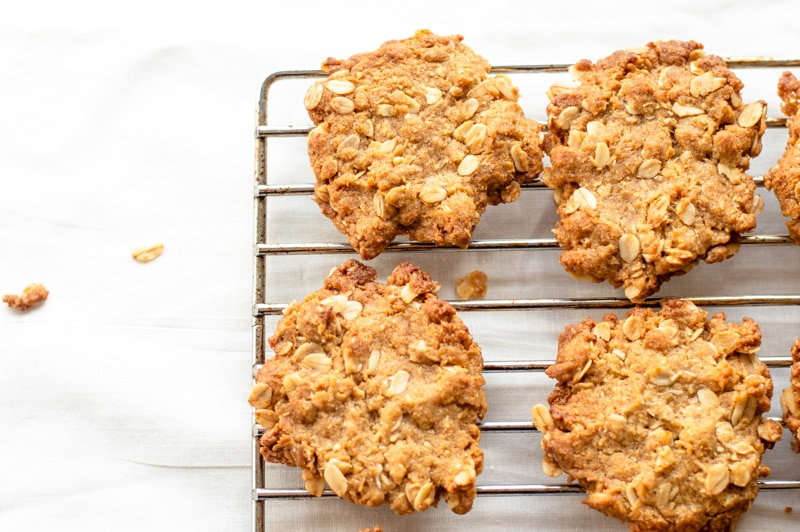
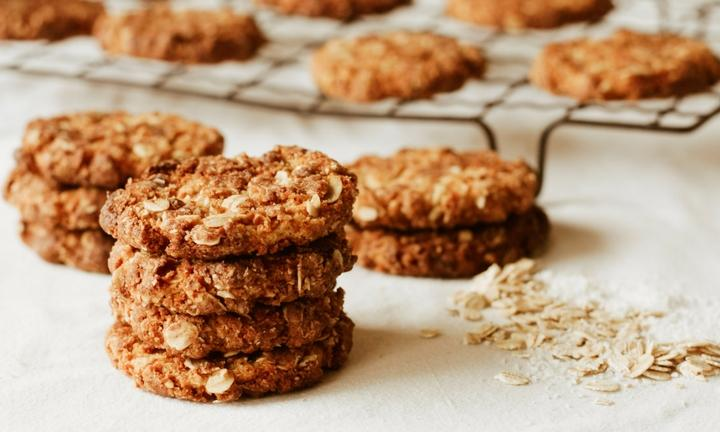
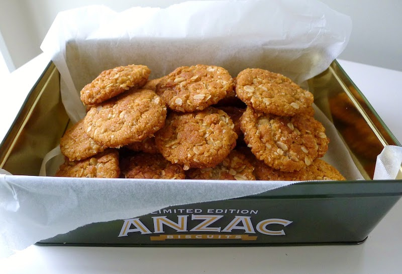

About Me
I'm Jane and I love baking and I love Anzac biscuits even more.
Anzac day is Australia and New Zealand’s national day of remembrance. April 25 is the day the Australian and New Zealand Army Corps (known as the Anzacs) fought their first major battle together during World War One on the Gallipoli Peninsula in Turkey. While this is the date we commemorate all those Anzacs who fought in the original battle at Gallipoli, it is also an opportunity for Australians and New Zealanders to commemorate all soldiers lost to us in the course of battle and in both countries this date is reserved as a public holiday.
For all that they represent what we have in common, the history of Anzac biscuits is highly contested. Both Australia and New Zealand claim to have invented the cookie-like Anzac biscuit that we now know, but its origins are not clear.
The original biscuit was not sweet at all; rather it was a savoury hardtack biscuit (also known as an Anzac tile or wafer) that was used in soldiers’ rations as a substitute for bread.
The first known Anzac biscuit recipe appeared in The War Chest Cookery Book, which was published in Sydney in 1917, but this recipe was for a cake, not a biscuit. It is said that biscuits with a similar recipe to the one we knew today appeared in magazines under different names, sometimes called “Rolled Oat Biscuits” or “Soldier’s Biscuits”. The current name only came about after the legendary ANZAC Gallipoli Campaign.
Anzac biscuit recipes, in the form we know them today, began appearing in cookbooks in the 1920s. They were sometimes called “Anzac crisps” or “Anzac crispies” (not “Anzac cookies”, as one would assume) in reference to their hardness. The earliest recipe for these “crispies” found to date is from a New Zealand cookbook published in 1921.
 During a speech to the East Otago Federation of Women's Institutes, Professor Helen Leach, of the Archaeology Department of the University of Otago in New Zealand, stated that the first published use of the name Anzac in a recipe was in an advertisement in the 7th edition of St Andrew's Cookery Book (Dunedin, 1915). This was a cake, not a biscuit, and there were no mixing instructions. A recipe for "Anzac Biscuits" appeared in the War Chest Cookery Book (Sydney, 1917) but was for a different biscuit altogether. The same publication included a prototype of today's Anzac biscuit, called Rolled Oats Biscuits. The combination of the name Anzac and the recipe now associated with it first appeared in the 9th edition of St Andrew's Cookery Book (Dunedin, 1921) under the name "Anzac Crispies". Subsequent editions renamed this "Anzac Biscuits" and Australian cookery books followed suit. Professor Leach also said that further research might reveal earlier references to the name and recipe in Australia or New Zealand.
Rather than being sent to the front lines for the soldiers to eat as some people think, ANZAC biscuits were commonly eaten at galas, fetes and other public events such as parades, where they were sold to raise money to support the war effort. At the time they were often called "soldier's biscuits", and the fundraising that was organised by the Patriotic Funds accumulated 6.5 million pounds to support New Zealand troops in the war.
Today, Anzac biscuits are commonly sold in most grocery stores, with some brands even selling limited edition tins each year on Anzac day. They can also be made using common household ingredients including flour, butter, and oats.